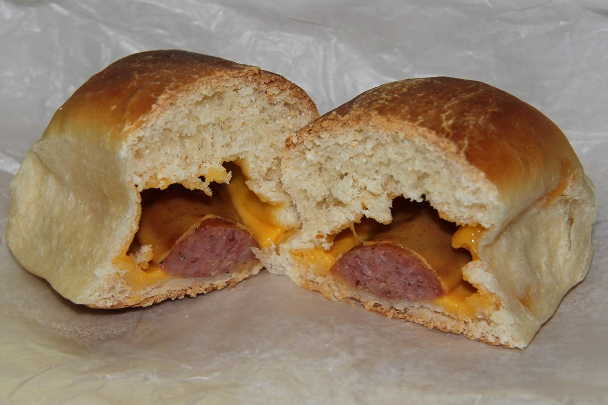
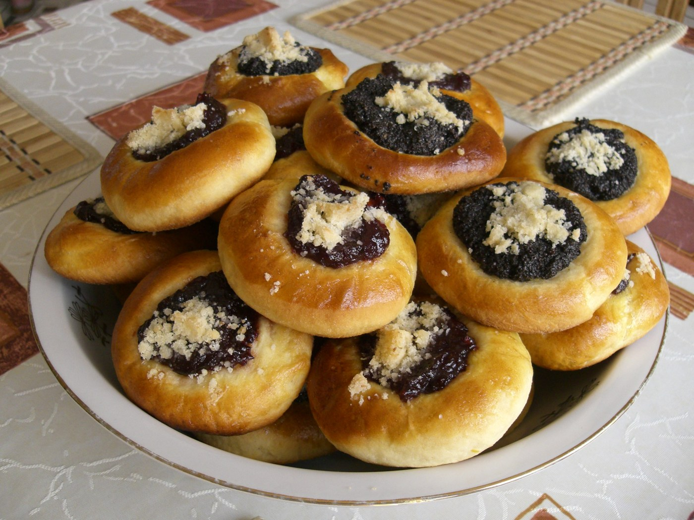
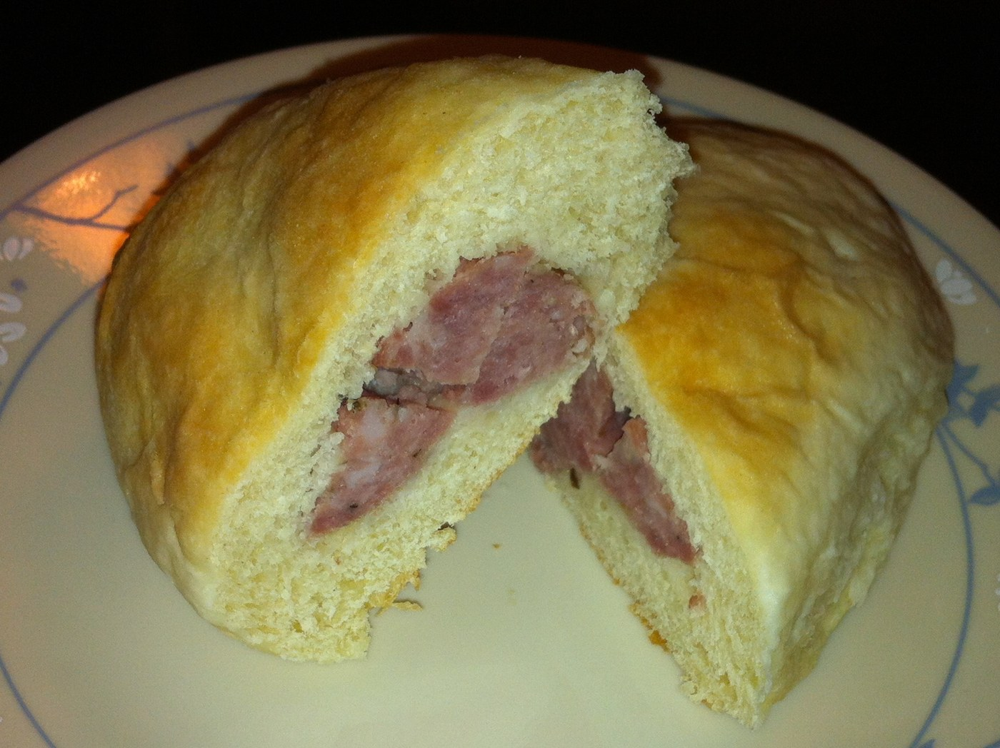

About Our Name · A Little History
Why We’re Called the Kickapoo Kolache (and Why Your Sausage “Kolache” Isn’t One)
Czech settlers brought a sweet, round pastry to Texas. Texans tucked a sausage inside, and the friendly arguing hasn’t stopped since. Here’s the warm history behind our name.

Every morning in Texas, somebody walks up to a bakery counter, points at a sausage tucked inside a soft, golden roll and says, “I’ll take a kolache.” And somewhere, a Czech grandmother quietly sighs.
We understand. We named a whole newspaper after the thing. So before the letters start coming in, let’s set the record straight, with love.
A Pastry With a Passport

The kolache came to Texas with Czech immigrants. Much of it started with the Rev. Josef Arnošt Bergmann, who settled at Cat Spring in Austin County and wrote letters home praising the opportunities here. In August 1851, a group of poor emigrants from Bohemia set out on a long, hard journey that ended at Galveston. Many more followed, especially from Moravia.
By the 20th century, Texas had roughly 250 Czech communities. The heaviest settlement was in Fayette and Lavaca counties, and more communities spread across the Blackland Prairie, from Burleson and Washington counties up through Williamson, Bell and McLennan.
They brought their recipes along. In Czech, the pastry is a koláč, and the word traces back to kolo, meaning “wheel.” That tells you the shape: a round, puffy bun of sweet yeast dough with a little dip on top, filled with fruit, sweet cheese or poppy seed. Apricot and prune were the old favorites. Families baked them at home for weddings, funerals and church gatherings, just as their people had in the old country.

Then Texas Got Involved
Now for the sausage. The savory roll so many of us grab on the way to work has a proper name: klobasnek, or klobasniky if you’re buying a dozen. The name comes from klobása, which is Czech for sausage, so it means “little sausage.”
It is widely credited to Wendel Montgomery, who opened the Village Bakery in West with his wife, Georgia, in 1952. Their daughter, Mimi Montgomery Irwin, has said he came up with it around 1953, and she has told the story more than one way. In one telling, a batch of sausage bread was giving the family fits. In another, he watched somebody eat a hot dog. Either way, a link went into the kolache dough, and Texas never looked back.
By the 1990s, klobasniky were sold in doughnut shops and kolache chains all over the state, usually labeled “kolaches.” The mix-up bothered the inventor. “He never claimed it was the kolache,” his daughter said. So if a bakery clerk has ever corrected you, take heart. The man who invented the thing would have been on the clerk’s side.
Even the Legislature Weighed In
Texas takes its pastry seriously. In 1989, the Legislature named Caldwell the Kolache Capital of Texas, and lawmakers recognized the town again in 1997 for its yearly Kolache Festival. That same year, they named West the Czech Heritage Capital of Texas and home of “the official kolache of the Texas Legislature.”
Our favorite part? The 1997 Caldwell resolution described the kolache as a traditional Czech pastry filled with “meat, cheese, fruit, poppyseed, or a combination.” Tradition may be on the purists’ side, but at least once, the Texas Legislature sided with the sausage crowd. We’ll let them settle it over coffee.
Why We’re the Kickapoo Kolache
Which brings us to our name. The Kickapoo half comes from Kickapoo Creek, which runs between Brownsboro and Chandler. The creek is where our two towns meet, and that’s what we want this paper to be, too: a meeting point for neighbors on both sides of the water, no wading required. The Kolache half is about how we hope you feel when you open this paper. (And yes, we’ve noticed the pastry in our own logo has a sausage in it. Technically, our mascot is a klobasnek. We’re at peace with it.)
We are called the Kickapoo Kolache because kolaches are a warm morning treat. They’re simple, sweet and better shared. That’s what we want to be for Brownsboro and Chandler: a warm morning read about good people and good things happening right here.
There’s an old Czech saying, “Bez práce nejsou koláče.” Roughly: no work, no kolaches. Our neighbors do that work every day, and we love telling their stories.
So pour a cup of coffee and grab whatever you call the thing in your other hand. Fruit, cheese, poppy seed or sausage, kolache or klobasnek, there’s a seat for you at this table. Just don’t tell the Czech grandmothers we said so.
Photos used under Creative Commons licenses: Larry D. Moore, CC BY 4.0; Michele Frazier, CC BY 2.0; Chmee2, CC BY-SA 3.0.